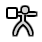

物体模式¶

模式选择菜单。¶
Modes are an object-oriented feature, which means that the available modes vary depending on the selected active object's type -- most of them only enable the default Object Mode (like cameras, lights, etc.).
Each mode is designed to edit an aspect of the selected object. See Tab. Blender的模式 below for details.
You set the current mode in the Mode selector of 3D Viewport header (see Fig. 模式选择菜单。).
在Blender中模式可以影响许多事情：
They can modify the panels and/or controls available in some Properties tabs.
They can modify the behavior of the whole editor, like e.g. the UV Editor and 3D Viewport.
They can modify the available header tools (menus and/or menu entries, as well as other controls...). For example, in the 3D Viewport, the Object menu in Object Mode changes to a Mesh menu in Edit Mode (with an active mesh object!), and a Paint menu in Vertex Paint Mode...
They can modify the available shortcuts.
物体模式列表¶
图标 |
名称 |
细节 |
|---|---|---|
The default mode, available for all object types, as it is dedicated to Object data-block editing (e.g. position, rotation, size). |
||
A mode available for all renderable object types, as it is dedicated to their "shape" Object Data data-block editing (e.g. vertices/edges/faces for meshes, control points for curves/surfaces, strokes/points for Grease Pencil, etc.). |
||
A mesh-only mode, that enables Blender's mesh 3D-sculpting tool. |
||
A mesh-only mode, that allows you to set your mesh's vertices colors (i.e. to "paint" them). |
||
仅适用于网格，专用于编辑顶点组权重。 |
||
A mesh-only mode, that allows you to paint your mesh's texture directly on the model, in the 3D Viewport. |
||
A mesh-only mode, dedicated to particle systems, useful with editable systems (hair). |
||

|
An armature only mode, dedicated to armature posing. |
|
A Grease Pencil only mode, dedicated to create Grease Pencil strokes. |
Note
The cursor becomes a brush in Paint and Sculpt Modes.
此处不再详细介绍模式的用法，请参阅对应章节的相关内容。
Hint
若阅读本手册时，手册中提到的一些按钮和菜单选项没有出现在屏幕上, 可能是尚未处于该选项有效的正确模式下。
多物体编辑¶
Edit and Pose Modes support editing of multiple objects at once.
This is convenient if you want to perform the same edits on multiple objects or want to animate multiple characters at once.
To use edit multiple objects at once, simply select multiple objects and enter the mode.
The Outliner can also be used to add/remove objects while you are in a mode, by setting or clearing the mode from the context menu, or Ctrl-LMB clicking on the objects data icon.
Only the active object will be used to display properties such as shape keys, UV layers, etc.
Selecting any element from an object will set this as the active object.
There are limits to the kinds of operations that can run on multiple objects.
You can't for example create an edge that has vertices from different objects.